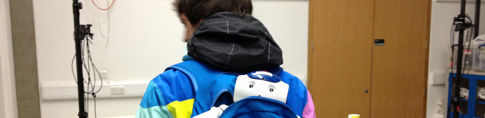

From the ripe age of 4, after being taught how to navigate the DOS command interface, a love affair grew for computers and technology. During my final year at secondary school, I caught a glimpse of the immersive nature of artificial intelligence. I understood the potential applications of such techniques and knew what I would like to go on to study. While at university, my enjoyment of artificial intelligence naturally lead to an interest in intelligent robotics, agent-based systems, and vision. I built and programmed wheeled and bipedal robots to autonomously play football, navigate a complex scenario to achieve an objective with only analogue sensors, I built handwriting identification programs, augmented reality programs, hand-signal identification programs, distributed network simulators, and 3D model animation software. I've learnt how, with software, we can create many things, and I plan to spend the rest of my life exploring how far we can go.

I love computer games. The immersive nature and limitless possibilities make game development the ultimate art form. But once the limits of a game's mechanics have been found, that game becomes less scary, less immersive, and the illusion ends. I enjoy finding these limits and exploring what could have been programmed differently. How can AI be used to enhance the mechanics and hide the limits?
I also have a love for gadgets that enhance our lives. From the smart watch telling me how fast I'm going down the mountain, to being able to re-live some of the questionable karting overtakes, technology isn't making us lazy as people are saying, it's making our lives more enjoyable and accessible. In my spare time, I love exploring and developing software for open-source platforms such as the Leap Motion and the Pebble smartwatch. These products are allowing us dreamers to develop what ever we can imagine.
I've always had a taste for adrenaline. In my teens I spent more time on a skateboard than sleeping. Everywhere I looked, there was another obstacle to tackle on four little wheels. When I arrived in Scotland, I was introduced to mountain biking, and was hooked. During the winter, when the snow comes out, I trade in the wheels for my snowboard and head north. During the week I enjoy testing myself on the latest routes at my local climbing wall.